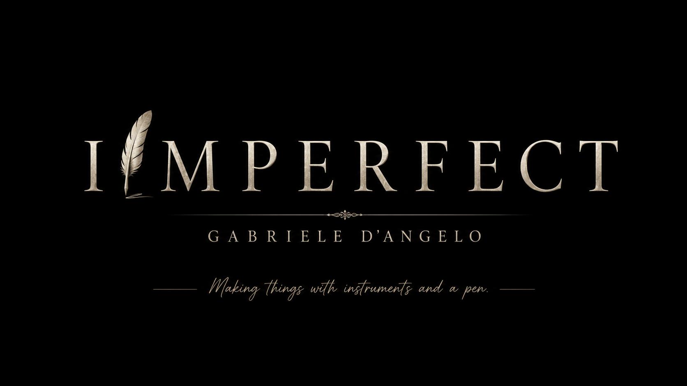
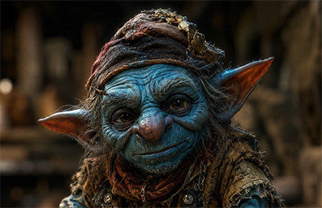

Music, images and stories.
Different languages, one creative path.
My latest musical creation

IMPERFECT is the artist identity under which I release my original songs: melodic rock shaped by guitars, emotion and storytelling.
Featured Videos
Another Beer, One Kiss, Another Lie
At the End of the Days
Beyond music
Latest Projects
Film, visual art and new creative work currently taking shape.

Short film · In development
Oro o mai più
A short story about desire, illusion and the strange distance between what we seek and what we truly need.
Discover the project →
3D Visual Art
Latest 3D Work
A new digital image project combining atmosphere, design and professional 3D rendering.
Discover the project →